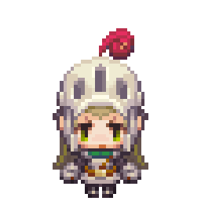
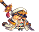

Guardian Tales es un videojuego RPG de acción y aventuras
que combina combates dinámicos, exploración de mazmorras
y desafiantes rompecabezas. Con un estilo retro inspirado
en los clásicos, el juego ofrece una historia profunda y
personajes llenos de personalidad.
Características del juego
Exploración
Recorre distintos mundos llenos de secretos, misiones ocultas y desafíos.
Combate en tiempo real
Enfréntate a enemigos con habilidades únicas y estrategias dinámicas.
Puzzles
Resuelve acertijos para avanzar en la historia.
Colección de héroes
Desbloquea y mejora personajes con habilidades especiales.
Personajes Destacados
Caballero
El protagonista del juego, valiente y determinado.

Princesa
Un personaje clave en la historia con un gran peso emocional.
Héroes variados
Cada personaje tiene habilidades únicas que ayudan en combate.

Historia
En Guardian Tales, el reino de Kanterbury está en peligro tras
la invasión de fuerzas oscuras. Como guardián, deberás embarcarte
en una aventura para salvar el mundo, descubrir la verdad detrás
del caos y proteger a la princesa.